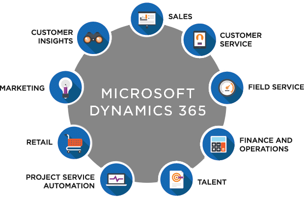
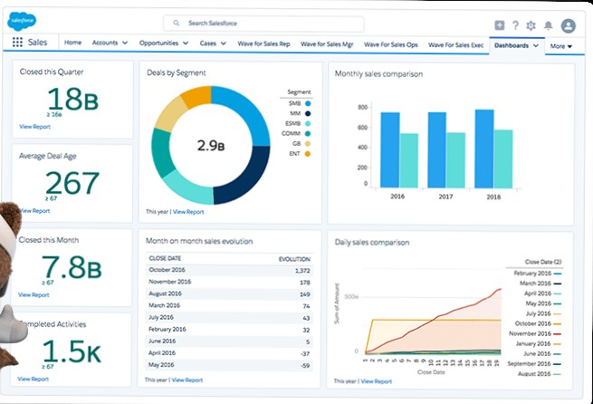
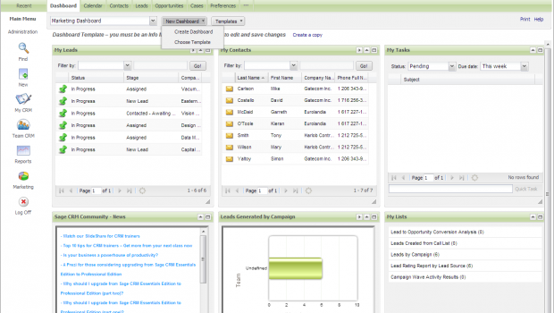
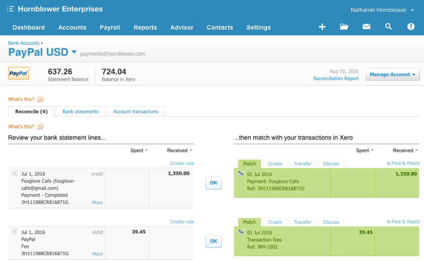
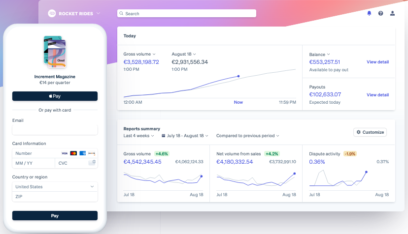

Customer Relations Management
Customer relationship management (CRM) is a system for managing a company's interactions with current and future customers. It often involves using technology to organize, automate and synchronize sales, marketing, customer service, and technical support. A good CRM system gathers information from lots of sources across the business and beyond. The business gets insights into how customers feel and what they are saying about the business.
Customer relationship management (CRM) delivers a holistic view of each customer that enables client-facing employees to make expedited and educated decisions about strategic efforts in the sales, marketing, and customer service fields.
CRM software allows a business to create a connection with customers by automating communications with them. It gives customers the feeling of personal service.
Newer CRM systems integrate with social media. Social CRM allows for communicating and connecting with customers in a medium that they are already using.
Microsoft Dynamics 365 helps reduce costs and increase profitability by organizing and automating business processes that increase customer satisfaction and loyalty. (Clarke, 2021)
Salesforce was founded in 1999. It is cloud-based CRM software and the have 150,000+ customers.
Sage CRM is cloud-based CRM. Its offers two cloud versions: Essentials and Professional. The Professional version offers extra features such as campaign management and better customisation options.
Payments Systems
There are more online payment options than ever before. An online shop will offer as many as they can on their site. The more online payment options the company offer, the more online sales will go through, the more money company will make.
Credit cards are still the most popular way to pay for goods and services online.
The most popular credit cards are: Mastercard, Visa, American Express, Discover.
Internet merchant account is required to set up credit card processing on your website. Banks are providing this service, like AIB. (AIB, 2021)

PayPal provides an all-in-one online payment solution that does not require a merchant account. Their Website Payments Standard program lets you accept Visa, MasterCard, Discover, and American Express credit card payments as well as bank transfers. PayPal fees are simple. They charge a fee of 1.9 to 2.9 percent of transaction plus 30 US cents per order, depending on the company's sales volume. The PayPal option is an ideal payment solution for a business on a low budget that needs to get started with eCommerce quickly and easily. (Clarke, 2021)
Stripe is a technology company that builds economic infrastructure for the internet. Businesses of every size—from new startups to public companies—use our software to accept payments and manage their businesses online. (Stripe, 2021)
Supply Chain Management
Supply chain management (SCM) is the management of the flow of goods, data, and finances related to a product or service, from obtaining raw materials to the delivery of the product.
Logistics is just one part of the supply chain. Digitally based SCM systems include material handling and software for all parties involved in product or service creation, order fulfilment, and information tracking―such as suppliers, manufacturers, wholesalers, transportation and logistics providers, and retailers.
SCM has historically been about increasing efficiency and reducing costs. Although those needs have not changed, what has changed is that the customer is now playing a front-and-centre role in setting SCM priorities. It has been said that customer experiences live and die in the supply chain.
Customer loyalty is predicated on an enterprise being able to quickly and accurately fulfil customer expectations. Raw materials, manufacturing, logistics, and trade, and order management must all be coordinated to get a given item to the customer within a reasonable timeframe. (Oracle, 2021)
The reason why Amazon can have such a wide spectrum of products is that they are not limited by physical space. Amazon do not have actual stores. Amazon can currently ship close to 10 million different products. This diversity makes a perfect example of what efficient supply chain management can accomplish.
The Coca Cola Company products are distributed to virtually every country in the world. Their preparation, distribution and transportation logistics are in line with a segmentation strategy for their customers when it comes to the size and presentation of their products.
Colgate keeps present all aspects of product diversity, effectiveness, optimization and customer support and it uses an effective distribution channel that encompasses all aspects of care and maintenance. (Kiger, n.d.)